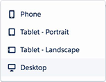

<div class="row monitor-height customize-a-page-layout">
  <div class="col-lg-12 monitor-height">
    <div class="row monitor-height">
      <hotspots-container>
        <wizard name="monitor" on-finish="finishedWizard()">
          <wz-step>
            <div class="step step-0">

            </div>
          </wz-step>
          <wz-step>
            <div class="step step-1">
              <div class="click-box" ng-click="activatedropdown()" ng-class="{active:!dropdown.active}" ng-show="!dropdown.active"></div>
              
              <div class="click-box-1" ng-class="{active:dropdown.active}" ng-show="dropdown.active" ng-click="Next()"></div>
            </div>
          </wz-step>
          <wz-step>
            <div class="step step-2">
              <div class="click-box active" ng-click="Next()"></div>
            </div>
          </wz-step>
          <wz-step>
            <div class="step step-3">
              <div class="click-box active" ng-click="Next()"></div>
            </div>
          </wz-step>
          <wz-step success="true">
            <div class="step success">
              <li-center>
                <p>
                  
                </p>
                <h2>Success!</h2>
                <p>
                  Nice work! It seems like our app is missing something. Nothing a little custom code can't fix. Don't worry, it's not as complex as it sounds.
                </p>
                <p>
                  <a ui-sref="customize-navigation" class="btn btn-rounded active">Continue</a>
                </p>
              </li-center>
            </div>
          </wz-step>
        </wizard>
      </hotspots-container>
    </div>
  </div>
</div>
